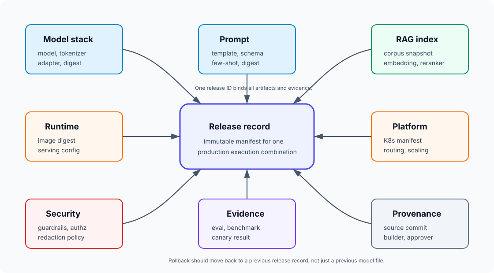
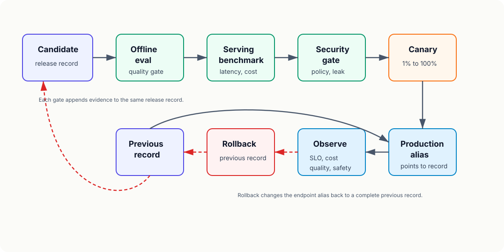

19장. Model registry를 넘어 release record로¶
18장에서는 security boundary와 guardrail을 application code에서 강제해야 한다고 했다. 그러면 다음 질문이 생긴다.
어떤 model, prompt, retrieval index, runtime, guardrail, eval result 조합을 production에 올렸는지 나중에 정확히 재현할 수 있는가?
전통적인 ML system에서는 model registry가 이 질문의 중심이었다. 모델 artifact와 version, stage, metadata를 관리하면 많은 문제가 해결됐다. 하지만 LLM application에서는 model만 바뀌지 않는다. Prompt가 바뀌고, tokenizer가 바뀌고, RAG index가 바뀌고, quantization 설정이 바뀌고, serving runtime이 바뀌고, safety policy와 tool allowlist가 바뀐다.
이 장의 독자 질문은 다음과 같다.
LLM service의 release를 model registry 하나가 아니라, 재현 가능한 release record로 어떻게 관리해야 하는가?
핵심은 release 단위를 "모델 파일"이 아니라 "사용자에게 답변을 만든 전체 실행 조합"으로 보는 것이다.
Model registry는 필요하지만 충분하지 않다¶
MLflow Model Registry 같은 도구는 registered model, model version, alias, tag, lineage를 관리한다. 이것은 여전히 중요하다. 모델 artifact가 어디에 있고, 어떤 version이 production alias를 가리키는지, 어떤 run에서 만들어졌는지 알아야 한다.
하지만 LLM production incident에서 자주 필요한 질문은 model registry만으로 답하기 어렵다.
| 질문 | model version만으로 부족한 이유 |
|---|---|
| 왜 어제부터 답변이 길어졌는가 | prompt, decoding parameter, output schema가 바뀌었을 수 있다 |
| 왜 특정 문서 질문만 틀리는가 | RAG corpus, chunker, embedding, reranker가 바뀌었을 수 있다 |
| 왜 p95 latency가 나빠졌는가 | runtime, GPU type, quantization, batch policy가 바뀌었을 수 있다 |
| 왜 tool call이 실패하는가 | tool schema, permission, endpoint version이 바뀌었을 수 있다 |
| 왜 security gate를 통과했는가 | safety policy, guardrail model, eval set version이 필요하다 |
| 어떻게 rollback할 것인가 | model만 되돌리면 prompt/index/runtime mismatch가 남을 수 있다 |
Model registry는 release record의 한 구성 요소다. LLM release control plane은 그 위에 더 넓은 기록을 만들어야 한다.
Release record는 실행 조합의 manifest다¶
Release record는 production에 올릴 후보를 하나의 불변 manifest로 묶은 것이다.

최소 구성은 다음과 같다.
| 영역 | 예 |
|---|---|
| Model | model ID, artifact URI, digest, license, base/fine-tune lineage |
| Tokenizer | tokenizer version, chat template, special token config |
| Adapter | LoRA/adapter ID, merge 여부, digest |
| Prompt | system prompt version, template, few-shot examples, output schema |
| Decoding | temperature, top_p, max_tokens, stop sequence |
| Runtime | vLLM/TensorRT-LLM/SGLang/llama.cpp version, image digest, engine config |
| Quantization | weight quantization, KV cache dtype, calibration/eval note |
| RAG | corpus snapshot, chunker, embedding model, index version, retriever, reranker |
| Agent | tool schema versions, tool allowlist, max_turns, approval rules |
| Security | guardrail versions, safety policy, data access policy, redaction policy |
| Evaluation | offline eval result, serving benchmark, red-team result, canary result |
| Platform | Kubernetes manifest, GPU type, node pool, autoscaling, routing |
| Observability | label contract, dashboard, alert rule, trace schema |
| Provenance | build job, source commit, artifact digest, approver, timestamp |
이 record가 있어야 "무엇을 배포했는가"와 "무엇으로 되돌릴 것인가"가 명확해진다.
Release ID는 사람이 읽고 기계가 검증해야 한다¶
Release record에는 사람이 이해할 수 있는 ID와 기계가 검증할 수 있는 digest가 모두 필요하다.
예를 들어 다음 두 값은 역할이 다르다.
release_id: support-rag-agent-2026-07-10.3
model_artifact_digest: sha256:7b5...
runtime_image_digest: sha256:91c...
rag_index_digest: sha256:2ab...
prompt_template_digest: sha256:ab4...
release_id는 dashboard, incident ticket, changelog에서 사람이 읽는다. Digest는 실제 artifact가 record와 같은지 검증한다. Tag나 alias는 바뀔 수 있다. Digest는 바뀌면 다른 artifact다.
LLM release에서는 다음 값에 digest나 immutable revision을 붙인다.
| 대상 | 고정 방법 |
|---|---|
| Container image | image digest |
| Model file | artifact digest 또는 object storage version |
| Tokenizer files | digest 또는 repository commit |
| Prompt template | template digest, Git commit |
| Eval dataset | dataset version, digest |
| RAG corpus snapshot | document snapshot ID |
| Vector index | index build ID, digest |
| Runtime engine | engine file digest |
| Policy bundle | policy version, digest |
Release record가 tag만 들고 있으면 나중에 같은 이름이 다른 내용을 가리킬 수 있다.
Model card와 release record는 다르다¶
Hugging Face model card는 모델의 용도, 한계, 평가, training detail, license 같은 정보를 문서화하는 데 유용하다. 하지만 model card는 보통 model 중심 문서다.
Release record는 deployment 중심 문서다.
| 문서 | 중심 질문 |
|---|---|
| Model card | 이 모델은 무엇이고 어떻게 쓰면 되는가 |
| Model registry entry | 이 모델 artifact의 version과 lineage는 무엇인가 |
| Provenance | 이 artifact는 어떤 source와 dependency로 만들어졌는가 |
| Release record | 이 production endpoint는 어떤 전체 조합으로 동작하는가 |
| Runbook | 문제가 생기면 누가 무엇을 확인하고 되돌리는가 |
좋은 운영 체계에서는 이들이 서로 링크된다. Model card가 release record를 대체하지 않고, release record도 model card의 ethical/use limitation 설명을 대체하지 않는다.
Prompt도 artifact다¶
LLM application에서 prompt는 code에 가깝다. System prompt 한 줄이 output format, refusal behavior, tool selection, citation style, token cost를 바꾼다.
Prompt release record에는 다음이 들어간다.
| 필드 | 이유 |
|---|---|
| Prompt template version | 변경 추적 |
| System instruction digest | 실제 배포된 text 검증 |
| Chat template | tokenizer/runtime과 호환성 확인 |
| Few-shot examples | 품질과 bias 변화 추적 |
| Output schema | client/parser 호환성 |
| Tool instruction | tool 사용 정책 추적 |
| Safety instruction | refusal, escalation 기준 |
| Prompt owner | 변경 승인 책임 |
| Eval delta | prompt 변경으로 품질/latency가 어떻게 바뀌었는지 |
Prompt를 DB에서 즉시 수정할 수 있게 만들면 운영은 빨라진다. 하지만 release record 없이 수정하면 사고 후 재현이 어려워진다. 빠른 prompt hotfix도 release record를 만들어야 한다.
RAG index도 release artifact다¶
16장에서 RAG는 release-managed pipeline이라고 했다. 19장에서는 이것을 record로 고정한다.
RAG release record에는 다음이 필요하다.
| 필드 | 예 |
|---|---|
| Corpus snapshot | docs-2026-07-10T09:00Z |
| Source policy | allowed repositories, document classes |
| Chunker | chunk size, overlap, markdown/code parser version |
| Embedding model | model ID, dimension, normalization |
| Vector index | index type, metric, build ID |
| Metadata schema | tenant, ACL, document type, freshness |
| Retriever config | top_k, filter contract, hybrid search weights |
| Reranker | model/version, top_n |
| Prompt assembly | context budget, ordering, citation format |
| RAG eval result | recall, faithfulness, answer correctness |
RAG rollback도 model rollback과 다르다. 잘못된 corpus snapshot이나 ACL metadata가 들어갔다면 index를 되돌려야 한다. Model만 되돌려도 잘못된 문서를 계속 검색하면 문제는 남는다.
Runtime과 platform 설정도 record에 들어간다¶
LLM release에서 runtime 설정은 품질과 비용에 직접 영향을 준다.
| 설정 | 영향 |
|---|---|
| Tensor parallel size | latency, throughput, NCCL traffic |
| Max model length | KV cache, VRAM, admission control |
| GPU memory utilization | OOM risk, capacity |
| KV cache dtype | quality, memory, speed |
| Prefix caching | TTFT, cache hit behavior |
| Batch policy | TPOT, fairness, p99 |
| Replica count | availability, cost |
| Autoscaling rule | queue time, cold start |
| Routing weight | canary, rollback |
Runtime image도 tag가 아니라 digest로 고정한다. latest로 배포하면 동일한 release record를 다시 실행해도 다른 binary가 올라갈 수 있다.
Kubernetes manifest나 KServe InferenceService도 release record에 링크한다. 실제 cluster에 적용된 manifest와 release record가 다르면, incident 분석에서 "문서상 배포"와 "실제 배포"가 갈라진다.
Evaluation result는 release record의 증거다¶
15장에서 release gate는 pass/fail 규칙이어야 한다고 했다. 19장에서는 그 결과를 record에 붙인다.
Release record에는 평가 결과의 요약만이 아니라 evidence pointer가 필요하다.
| Evidence | 예 |
|---|---|
| Offline eval run | run ID, dataset version, grader version |
| Serving benchmark | workload shape, hardware, runtime config |
| Security eval | injection set, RAG auth test, tool permission test |
| Canary result | traffic percentage, duration, sample count |
| Approval | approver, reason, exception |
| Known risk | accepted regression, follow-up ticket |
평가 결과가 release record와 분리되어 있으면, 나중에 "왜 이 release가 통과됐는가"를 설명하기 어렵다.
Promotion은 alias 이동이 아니라 record 이동이다¶
Model registry에서는 champion, production, candidate 같은 alias를 model version에 붙일 수 있다. LLM release에서는 alias가 model version이 아니라 release record를 가리켜야 한다.
예를 들어 production endpoint가 다음 record를 가리킨다.
endpoint: support-assistant
production_release: support-rag-agent-2026-07-10.3
previous_release: support-rag-agent-2026-07-09.1
canary_release: support-rag-agent-2026-07-10.4
이렇게 해야 rollback이 정확해진다.

Promotion 단계는 다음과 같다.
| 단계 | Gate |
|---|---|
| Candidate created | 모든 artifact digest와 config가 record에 들어갔는가 |
| Offline eval | 품질, RAG, agent trajectory, safety 기준 통과 |
| Serving benchmark | TTFT, TPOT, throughput, cost, OOM 기준 통과 |
| Security gate | injection, tool permission, data leak 기준 통과 |
| Canary | production traffic 일부에서 metric과 feedback 통과 |
| Promote | production alias를 release record로 이동 |
| Observe | SLO, cost, quality, security signal 감시 |
Rollback도 record 단위로 한다. Prompt만 되돌리고 runtime은 그대로 두거나, model만 되돌리고 index는 그대로 두면 예상하지 못한 조합이 생긴다.
Release record는 telemetry label과 연결된다¶
14장에서 metric label contract를 만들었다. Release record가 있으면 telemetry label도 단순해진다.
최소한 다음 label은 request, trace, log에 들어가야 한다.
| Label | 이유 |
|---|---|
release_id |
모든 signal을 배포 단위로 묶는다 |
model_id |
모델별 latency/quality 분해 |
runtime_id |
runtime regression 추적 |
prompt_id |
prompt 변경 영향 확인 |
rag_index_id |
retrieval 문제 분리 |
policy_id |
safety/security policy 변경 추적 |
route |
canary, shadow, fallback 구분 |
workload_class |
short chat, long context, RAG, agent 분리 |
OpenTelemetry resource semantic convention도 service version과 deployment environment 같은 속성을 둔다. LLM service에서는 여기에 release record ID를 붙여야 한다. 그래야 dashboard와 incident ticket이 같은 release를 말한다.
Release record 예시¶
실제 record는 YAML, JSON, database row, GitOps manifest 등 어떤 형태여도 된다. 중요한 것은 immutable하고 조회 가능해야 한다는 점이다.
release_id: support-rag-agent-2026-07-10.3
status: candidate
created_at: "2026-07-10T14:00:00Z"
owner: ai-platform
model:
registry: mlflow
registered_model: support-assistant
version: "42"
artifact_digest: sha256:7b5...
tokenizer_digest: sha256:13d...
prompt:
template_id: support-agent-prompt
version: "2026-07-10.2"
digest: sha256:ab4...
output_schema: support_answer_v3
runtime:
engine: vllm
image_digest: sha256:91c...
tensor_parallel_size: 2
max_model_len: 32768
kv_cache_dtype: fp8
rag:
corpus_snapshot: support-docs-2026-07-10
embedding_model: text-embedding-3-large
index_id: support-qdrant-2026-07-10.1
index_digest: sha256:2ab...
retriever_top_k: 20
reranker: bge-reranker-v2-m3
agent:
allowed_tools:
- lookup_order:v4
- read_policy:v2
- create_refund_draft:v3
max_turns: 6
approval_policy: refund-approval-v2
security:
policy_bundle: llm-security-policy-2026-07-10
guardrail_bundle: guardrails-v8
redaction_policy: pii-redaction-v5
evidence:
offline_eval_run: eval-2026-07-10-1712
serving_benchmark_run: bench-2026-07-10-a100-2gpu
security_eval_run: sec-eval-2026-07-10-3
canary_run: canary-2026-07-10-25pct
deployment:
endpoint: support-assistant
manifest_digest: sha256:513...
route: canary
traffic_percent: 25
rollback:
previous_release: support-rag-agent-2026-07-09.1
rollback_checked: true
이 record는 장식 문서가 아니다. 배포 시스템, 관측성, eval 시스템, incident response가 모두 참조하는 control plane object다.
Provenance와 approval을 붙인다¶
SLSA provenance는 artifact가 어떤 build definition, source, dependency로 만들어졌는지 설명하는 방식이다. LLM release에도 같은 사고방식이 필요하다.
Release record에는 다음 provenance를 남긴다.
| 항목 | 예 |
|---|---|
| Source commit | prompt/template/runtime manifest commit |
| Build job | model packaging, index build, container build |
| Builder identity | CI job, service account |
| Dependencies | base model, base image, tokenizer, dataset |
| Artifact digest | model, image, index, policy bundle |
| Reviewer | platform, ML, security approver |
| Exception | 어떤 gate를 예외 승인했는지 |
이 정보가 있어야 supply chain 문제나 잘못된 index build를 추적할 수 있다.
Failure pattern¶
Model만 rollback한다¶
Prompt, tokenizer, RAG index, runtime이 그대로면 이전 production 동작으로 돌아가지 않을 수 있다. Rollback target은 release record여야 한다.
Prompt hotfix를 기록하지 않는다¶
운영 중 prompt를 바로 고친 뒤 record를 남기지 않으면, 품질 변화와 incident를 재현할 수 없다.
Tag를 digest처럼 믿는다¶
Container tag, model alias, dataset name은 바뀔 수 있다. 중요한 artifact에는 digest나 immutable revision이 필요하다.
Eval 결과를 따로 저장한다¶
Eval dashboard에만 결과가 있고 release record에 evidence pointer가 없으면, 나중에 왜 promote됐는지 설명하기 어렵다.
RAG index를 운영 데이터로만 취급한다¶
Index는 release artifact다. Corpus snapshot, chunker, embedding model, metadata schema가 바뀌면 release가 바뀐 것이다.
Telemetry에 release_id가 없다¶
Metric과 trace가 release record를 가리키지 않으면 regression을 배포 단위로 찾을 수 없다.
실습: Release record checklist 만들기¶
다음 checklist를 첫 release template로 둔다.
| 질문 | 통과 기준 |
|---|---|
| Model artifact가 immutable digest로 고정됐는가 | model digest 또는 object version 존재 |
| Tokenizer와 chat template이 고정됐는가 | tokenizer digest와 template version 존재 |
| Prompt가 versioned artifact인가 | prompt digest와 owner 존재 |
| Runtime image와 config가 고정됐는가 | image digest와 주요 serving config 존재 |
| RAG index가 release artifact인가 | corpus snapshot, index ID, embedding, reranker 존재 |
| Agent tool contract가 고정됐는가 | allowed tool versions, max_turns, approval policy 존재 |
| Security policy가 연결됐는가 | guardrail bundle, redaction, authz policy 존재 |
| Eval evidence가 연결됐는가 | offline, benchmark, security, canary run ID 존재 |
| Rollback target이 명시됐는가 | previous release record 존재 |
| Telemetry label이 배포됐는가 | release_id가 metric/trace/log에 있음 |
이 checklist를 통과하지 못하면 production release가 아니라 실험 배포에 가깝다.
정리¶
- LLM production release의 단위는 model file 하나가 아니라 model, tokenizer, prompt, RAG index, runtime, platform, guardrail, eval result의 전체 조합이다.
- Model registry는 필요하지만 release record를 대체하지 못한다. Model registry entry는 release record의 한 구성 요소다.
- Prompt, RAG index, runtime config, security policy도 artifact로 versioning해야 한다.
- Promotion과 rollback은 model alias가 아니라 release record alias를 이동하는 방식으로 설계해야 한다.
- Release record에는 사람이 읽을 수 있는 release ID와 기계가 검증할 수 있는 digest가 모두 필요하다.
- Eval, benchmark, security gate, canary 결과는 release record의 evidence로 연결되어야 한다.
- Telemetry에는
release_id가 들어가야 배포 단위로 latency, quality, cost, security regression을 추적할 수 있다. - Release record는 MLOps 문서가 아니라 운영 control plane의 핵심 객체다.
Source anchors¶
- MLflow Model Registry: https://mlflow.org/docs/latest/ml/model-registry/
- Hugging Face model cards: https://huggingface.co/docs/hub/model-cards
- SLSA provenance: https://slsa.dev/spec/v1.0/provenance
- Kubernetes Deployments: https://kubernetes.io/docs/concepts/workloads/controllers/deployment/
- KServe InferenceService: https://kserve.github.io/website/latest/modelserving/v1beta1/inferenceservice/
- OpenTelemetry resource semantic conventions: https://opentelemetry.io/docs/specs/semconv/resource/